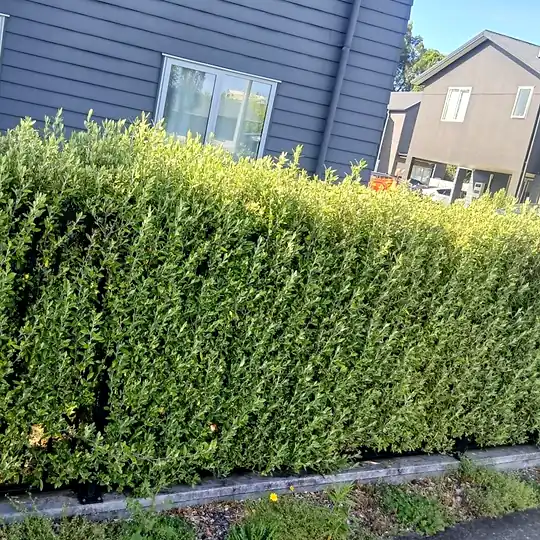
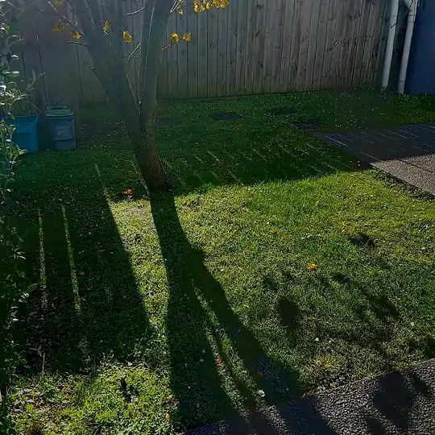
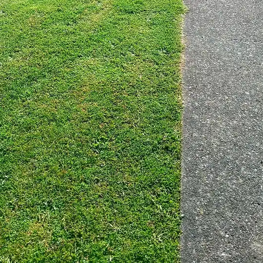

Grounds that look looked after, every visit
The outside of a property is the first thing tenants, customers and visitors see. Hamilton Lawn Mowing looks after commercial lawns and grounds across Hamilton on a regular schedule, so the site always looks cared for and you never have to chase anyone to get it done.
We already mow commercial sites around Hamilton Lake and Melville on a regular schedule. Whether you manage one rental or a portfolio of properties, we set up a visit plan that suits the site and then just keep turning up.
Sites we look after
- Rental properties for property managers and private landlords, including between tenancies.
- Body corporates and multi-unit complexes with shared lawns, berms and common areas.
- Offices, shops and retail sites where the entrance and frontage need to stay tidy.
- Light industrial and storage sites with grass verges, fence lines and banks.
What a commercial visit includes
- Catch mowing, so clippings are collected rather than left on paths and car parks.
- Line trimming along fences, buildings, garden edges and around obstacles.
- Paths and hard surfaces left clear of clippings before we leave.
- Optional extras: garden weeding, hedge trimming, weed spraying and green waste removal.
Large open areas can be done with our small ride-on mower, which keeps the visit shorter on bigger sites.
Recent commercial work in Hamilton
A commercial site at Hamilton Lake where we trimmed the street hedge and weeded the front gardens as well as mowing:



Easy for property managers
You tell us the site and what it needs once. After that, we keep to the schedule and you only hear from us if something needs your attention, like a broken fence, a blocked gate or a tenant issue.
How it works
- Free quote. Send us the address and what you need. We look at the site and give you a price per visit.
- Set the schedule. We agree how often we come and what is included.
- We keep it tidy. We can send before and after photos from a visit when you need proof the work was done.
We work Monday to Friday, 9am to 6pm. If a site is busy at certain times, tell us and we will plan visits around it.
Commercial Mowing FAQs
Do you have public liability insurance?
Yes. Hamilton Lawn Mowing carries public liability insurance for commercial work. Ask us if you need the details for your records.
How much does commercial lawn mowing cost?
Commercial mowing is quoted per site. The price depends on the size of the grounds, access, how often you want visits and any extras such as hedges or gardens. The quote is free and there are no hidden fees.
Can you look after several properties for us?
Yes. Property managers and landlords can add more than one property and we schedule each one so the visits are regular.
What days and times do you work?
We work Monday to Friday, 9am to 6pm. If your site is busy at certain times of day, let us know and we will plan around it.
Do you take the clippings and green waste away?
We catch mow, so clippings are collected. Larger amounts of green waste, such as hedge trimmings or garden clearance, are quoted per job.
Which areas do you cover?
We cover all of Hamilton, including Frankton, Hamilton Lake, Melville, Hamilton East, Te Rapa, Rototuna, Chartwell and Peacocke.
Get a commercial mowing quote
Tell us about the site and how often you need it done. We will come back with a free, no obligation quote.